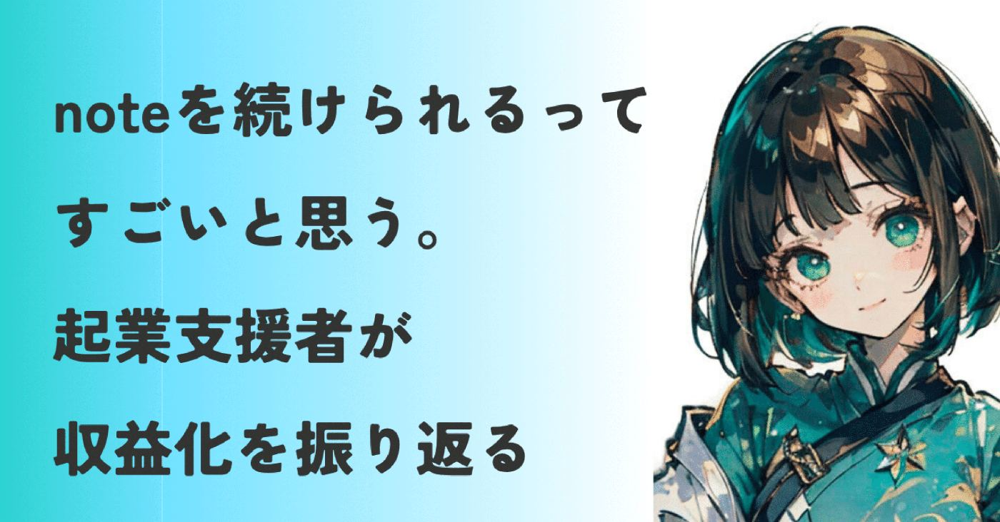
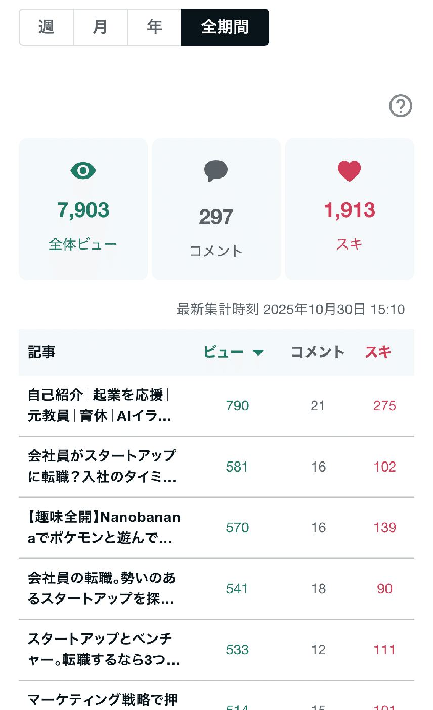
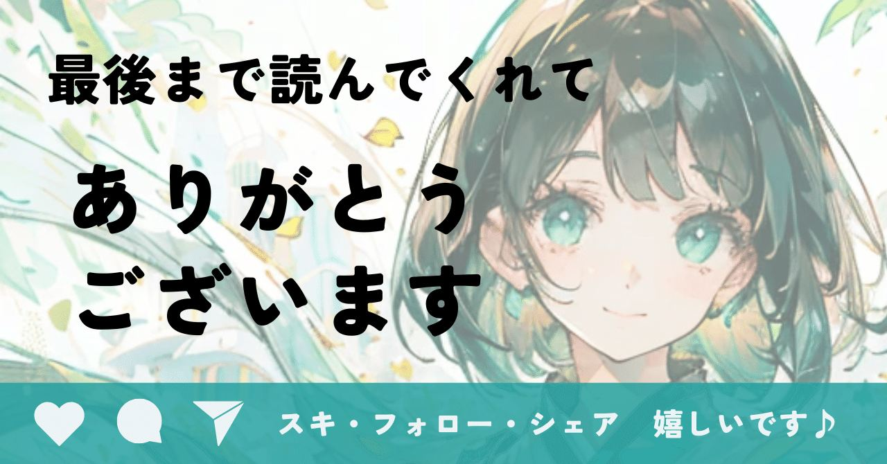

noteを続けられる人が起業の知識を持ったら、収益化は目前だと感じた1ヶ月。
アカウントを開設して、1ヶ月が経ちました。
正確には1ヶ月と２週間です。

もうちょっとで8,000ビューでした！
コメントも300近くいただけて嬉しいです。
読んでくださった皆さまのおかげで、ひーひー言いながら何とか続けることができました。
ひとえに感謝です。ありがとうございます！
私のnoteでの目標は、とにかく続けること。
なぜかと言うと、一番大変だと感じたのは、
続けることだからです。
アイデアはあるのに、書く時間がない。
下書きが溜まりまくり。
あれも書きたいこれも書きたい。
書きたい気持ちはあるのに、体力が残ってない。ついでに時間も無い。
そんな日が続くと、今日はやめとこうかなと思ってしまう。
でも、そこで踏みとどまれるかどうかって大切ですよね。
noteを続けるって、思っている以上にエネルギーが要る。
本業で得た起業の知識という土台が無かったら、たぶんもっと苦労してる。
そんな振り返りnoteです。
広報ゼロで3,000円売れた記事
収益自体は、別アカウントで記事を出して2週間くらいで出ました。
(読む人が読むと個人を特定できちゃうので、別アカは明かさずにおきますね。)
初めて書いた、たったひとつの有料記事。
無料記事を有料化もしてみたけれど、そっちは正直ほとんど売れていません。
でもこの初めての有料記事だけは。
何も広報していないのに、3,000円以上売れてます。
ジャンルはエッセイ。
フォロワーは500人以下。
いわゆる弱小アカウントです。
投稿してすぐに買ってもらえたわけじゃありません。
けれど、自分にとって必要な記事なら、時間をかけてでも辿り着いてくれる人がいる。
それを肌で感じました。
ちなみに「金田まり」を運用してみて、
転職の記事が好評だったのは意外でした。
https://note.com/alive_sheep6563/n/nd609dab93f78
もしかしてスタートアップ転職、需要ある？
もっと書こうかな…
今は有料マガジン化してます。
https://note.com/alive_sheep6563/m/mcbd3061e77f9
売れた理由は運じゃなくて
私はスタートアップやベンチャーをはじめ、いろんな起業を見てきました。
仕事柄、ビジネスプランをざっと500件は読んでいます。
だから、普通の会社員より少しだけ起業の知識がある。
そしておそらくその有料記事が売れた理由は、運ではなく設計。
ほんの少し、起業の知識を取り入れただけなんです。
たとえばペルソナ。
noteで収益化を目指す人なら、一度は目にしたことがあると思います。
ペルソナとは、理想の顧客像を、年齢、職業、価値観などリアルな一人の人間として具体的に設定したものですよね。
言葉は知られてる。
でも、突き詰めてペルソナを設定してるって人は、意外と少ない。
何歳？
性認定は？
家族構成は？
子どもがいるとしたら性別や年齢は？
仕事してる？
仕事はどんな業界でどんな職種？
通勤、在宅勤務？
住んでる都道府県と市町村は？
その地域の特性は？
戸建て、集合住宅？
何に興味を持ってる？
SNSを使ってる？
使ってるとしたら、どのタイミングでどんな情報を見てる？
どんな趣味を持ってる？
寝る時間や起きる時間は？
どんな生活リズムを送ってる？
ペルソナを設定できそうな要素を、ざっと挙げてみる。
これらをどこまで設定できるか？
突き詰めるべき箇所は記事の内容によって違うと思うけれど、やればやるほど顧客の解像度は高くなり、何を求めているかを把握できる。
ペルソナを極限まで突き詰めた起業家がどんな成功を収めたかを、目の当たりにした衝撃は今でも忘れません。
そして私もやってみた結果、何もしなくても細々と売れている、という記事が実現したわけです。
起業の知識を少し使っただけで、簡単に収益化できる。
知識を持ってて良かったなと心から思います。
noteはビジネスの縮図
今まで続けてみて強く思うのは、note収益化を目指すことは、起業だということ。
立派なコンテンツビジネスなんですよね。
ついでに言うと、メンバーシップはファンビジネスの要素が加わる。
売れる記事にはちゃんと理由がある。
誰のどんな課題をどう解決するか
これを意識するどうかで、売れるかどうかが変わる。
たくさんの起業家を見てきて思うのは、みんな小さく始めて、仮説検証を繰り返しているということ。
プロダクトマーケットフィット（PMF）という言葉を以前、記事で紹介しました。
https://note.com/alive_sheep6563/n/ne8ba4f2fe97e
noteの記事作りも似たプロセスを辿っていると、つくづく感じるのです。
そして売り方を決めたら市場を徐々に広げる。
こちらの記事に載せてます。
https://note.com/alive_sheep6563/n/n5e2ea8411af4
今は市場を探っている段階なので、いずれはここも突き詰めて取り組んでみたいところです。
続けるのは、やっぱり難しい
とはいえ、頭で分かっていても続けるのは難しい。
夜中は赤ちゃんに授乳して、朝早く起きた長男の相手をして。
家族のご飯を3食用意して、洗濯物を干して片付けて。
あっという間に寝かしつけの時間。
寝落ちもセットで。
世の中のワーママさんたちは仕事もされてますよね。すごすぎません？
記事を書く時間なんて、限られています。
そんな中でももう少しだけ書こうとnoteを開く日もあれば、今日は無理と思う日もあります。
今は子どもたちがお腹を下し気味なので、ちょっとトーンダウン気味です。
続ける力 と起業の知識
だからこそ思います。
毎日じゃなくても、続けられる人は強い。
続ける力を持っている人が、もし起業の知識を使いこなせるようになったら。
今よりもっと、収益化は達成しやすくなる。
そのためのお手伝いができたらいいなと思う。
私は、売れ続ける仕組みは作れていません。
投稿を続けるだけで精一杯。
でも、そんな私でもnoteで収益を生み出せた。
それは、noteが優しいから。
頑張る人を、誰かがちゃんと拾い上げてくれる仕組みを作れる場所だから。
だからこそ、思うんです。
noteを続けられる人が起業の知識を持ったら、収益化は目の前です。
キャッチーな煽り文句で売る力ももちろん大切なんですけれど、続ける力も同じかそれ以上に大切です。
さて、今回はこんなところで。
今後もあなたに役立つ記事をお届けできるように、私も頑張りたいと思います。
今日も、あなたの記事が誰かに届きますように。
